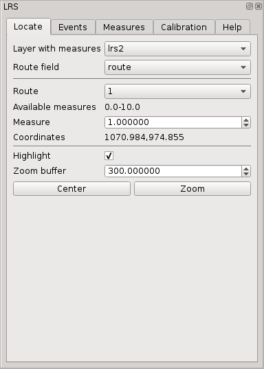
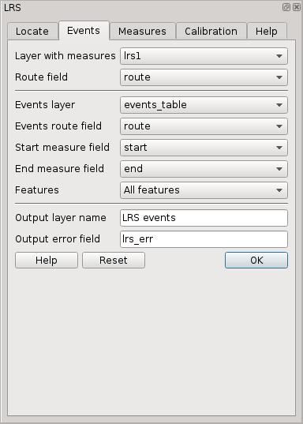
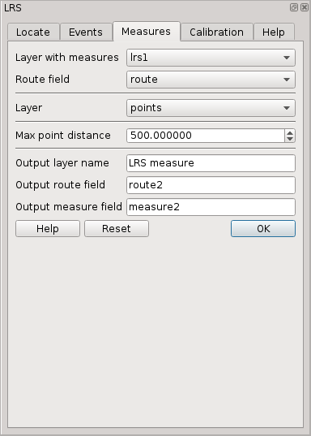
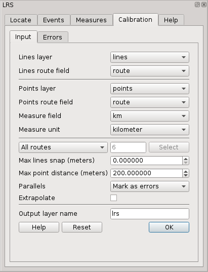
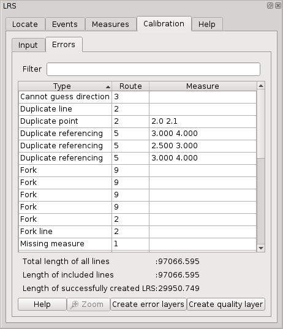

LRS Plugin for QGIS
“Linear referencing (also called linear reference system or linear referencing system or LRS), is a method of spatial referencing, in which the locations of features are described in terms of measurements along a linear element, from a defined starting point, for example a milestone along a road.” (Linear referencing, Wikipedia, 2017).
Introduction
|
The plugin was developed by MPA Solutions in collaboration with Provincia Autonoma di Trento - Dipartimento infrastrutture e mobilità - Servizio Gestione Strade - Ufficio Controllo e Tecnologie Stradali.
MotivationThe biggest problem of LRS is consistency and quality of data. This is caused by the fact that line and point data are maintained separately, sometimes even by different entities. Identification and correction of errors in LRS is tedious and inefficient without specialized tools. The true value of this plugin is in its support for errors identification, navigation and correction. |

|
Features
- Standard LRS tasks: calibration (creation of LRS), creation of punctual and linear events and calculation of measures for points.
- Support for all vector formats supported by QGIS.
- Supported are lines, multi-lines, points, multi-points. The lines don’t need to be oriented. Single route may be represented by multiple features.
- Dynamic list and layer of errors and layer of quality which are updated immediately when source layer features is edited.
- The generated LRS is stored in memory only.
- Interpolation between points by default, optional extrapolation.
Terminology
- route is linear feature represented by one or more line features with the same identifier, e.g. road with the same road number or river with the same name.
- route id is unique route identifier
- measure is real world measure along linear feature, e.g. kilometers measured along road from its beginning which may be represented in real world by milestones.
Common input options
The three tools Locate, Events and Measures which are using as input an existing vector layer with measures have two common options which are synchronized between tool tabs
Common options:
- Layer with measures: Input vector layer with measures.
- Route field: Field with route id.
Locate event
Single event may be interactively localized from Locate tab.

Localize tab options:
- Layer with measures: Input vector layer with measures.
- Route field: Field with route id.
- Route: Route id.
- Available measures: Comma separated list of measure ranges available for selected route.
- Measure: Event measure.
- Coordinates: Event coordinates in current map canvas CRS or error message if the event cannot be referenced.
- Highlight: Highlight the event in map canvas.
- Zoom buffer: Buffer (minimum radius) aroud the event in map units used for zoom.
It is possible either to Center the map canvas to current event or to Zoom to the event using specified buffer.
Create events
Punctual or linear events can be generated from Events tab.

Events tab options:
- Layer with measures: Input vector layer with measures.
- Route field: Field with route id.
- Events layer: Layer with informations about events. i.e. route id and measure(s). The layer is usually a table without geometry.
- Route field: Field with route id.
- Start measure field: Measure of a point event or start measure of a linear event.
- End measure field: End measure of a linear event. To be left empty for point events.
- Output layer name: Name of output layer used in legend.
- Output error field: Optional name of error field. This field contains description reasonsons why an event could not be (fully) created. If this option is left blank, the field is not created.
The output layer type is point if End measure field is left blank or line if End measure field is selected. The output layer contains all attributes from input layer plus, if specified, error field.
The output is created as memory layer which can be later stored in a persistent data source using standard QGIS options like “Save as” or using drag and drop to an existing PostGIS schema in the browser.
It may happen that event measures are slightly outside available LRS (at the beginning or end of a route) because of decimal number inaccuracy of input data. To avoid unwanted errors, a measure tolerance is applied:
- punctual events : If an exact event measure was not found the plugin will search for nearest available event within the measure tolerance.
- linear events : Missing event parts (gaps) are reported as errors only if they are longer than the event tolerance.
The event tolerance is currently set to 0.0001 (in measure units).
Calculate measures
Route id and measures may be acquired for existing points from Measures tab.

Measures tab options:
- Layer with measures: Input vector layer with measures.
- Route field: Field with route id.
- Layer: Existing layer of points for which measures have to be found.
- Max point distance: Maximum distance of point from nearest line.
- Output layer name: Name of output layer used in legend.
- Output route field: Name of output field in which route id will be stored.
- Output measure field: Name of output field in which measure will be store.
The output layer contains all attributes from input layer plus route id and measure field. To acqure measure, the points are projected to neares point on nearest route within the threshold. If nearest route within threshold was found but there is no LRS for that part of the route, the measure field is left blank. If no route was found within the threshold both route id and measure fields are left blank.
The output is created as memory layer which can be later stored in a persistent data source using standard QGIS options like “Save as” or using drag and drop to an existing PostGIS schema in the browser.
Calibration
The calibration is a process in which:
- route elements are joined into route parts
- points are attached to routes by route id
- routes orientation is guessed from point measures
- table of calibration records is created for each route parts
- it is generated the list of errors
The calibration is launched from the tab Calibration > Input
Calibration Input

Options:
- Lines layer: Layer with lines representing routes. It may contain lines and multi-lines. A single route may be represented by multiple features. Lines do not have to be oriented.
- Lines route field: Route id field in lines layer. All field types are supported (including floats) but reasonable types, i.e. string or integer are recommended.
- Points layer: Layer with points. It may contain points and multi-points (multi-points make no sense in LRS however).
- Points route field: Route id field in points layer. The field type may be string or integer.
- Measure field: Measure field in points layer. All field types are supported (including floats) but reasonable types, i.e. string or integer are recommended. The type of field does not need to match route id field type in line layer, see general notes.
- Measure unit: Measure field values units.
- All/include/exclude routes: Calibration may be done on all routes, selected routes or some routes may be excluded. Included/excluded routes can be either entered in following field as comma separated list or selected from list in dialog opened by Select button. The list in the dialog is filled by route id values from lines layer.
- Max lines snap: Maximum gap between route lines to be snapped.
- Max point distance: Maximum distance of point from route to be used.
- Parallels: Because parallels
(multiple edges, parallel edges), typicaly roundabouts
would become ambiguous in LRS they must be treated in special way. There are three options:
- Mark as errors: Parallels will be added to the list of errors and excluded from calibration.
- Span by straight line: Parallel lines will be replaced by straight line going from parallels start coordinate to end coordinate.
- Exclude: Parallels will be excluded from callibration without being marked as errors.
- Extrapolate: If checked, measures are extrapolated before first and after last point on route part. Otherwise segments before/after first/last point are not calibrated.
- Output layer name: Output vector memory layer to which output features with geometry with measures is written if a name is given. The output memory vector can be then exported with standard QGIS tools like “Save as” or using drag and drop to an existing PostGIS schema in the browser. The output layer may be used as input to Locate, Events and Measure tools.
When all options are set correctly, calibration may be launched by OK button. The process may take a while, progress bar with status label is indicating current state. When calibration is finished all tabs are enabled and LRS may be used or edited.
Measures are always interpolated between two points. This may be made optional in future but currently we don’t see any use case where non interpolating could give better results. If you know any, please create a new issue.
The generated LRS is not stored in a new output layer but it is kept in memory and it can be used immediately to generate events or acquire measures. This may change in future but currently QGIS vector core API does not support measure value in vector geometry. We hope that rebuilding the LRS when needed should not be disturbing because all options are stored in project for the case when a task has to be repeated and calibration is relatively fast.
The LRS plugin in QGIS works similarly as ArcGIS CalibrateRoutes_lr() with parameters calibrate_method=DISTANCE, search_radius=<Max distance> and interpolate_between=BETWEEN. If Extrapolate is checked it means plus parameters extrapolate_before=BEFORE and extrapolate_after=AFTER.
Calibration errors
When calibration phase is finished it is possible to browse data inconsistencies in Calibration > Errors tab.

Tha tab contains list of all errors which can be filtered over all columns by entering a string in Filter entry. The plugin is able to identify following data errors:
- Duplicate line: Two or more lines with the same route id and geometry.
- Duplicate point: Two or more points with the same route id and geometry.
- Fork: Three or more lines with the same route id connected in one node.
- Fork line: Shortest route part(s) connected to fork.
- Orphan point: No line with the same route id.
- Out of threshold: The point is distant more than Max point distance from nearest line of the same route id.
- Not enough points: A part of a route has not enough points (two points is minimum) to be calibrated.
- Missing route id: Point or line has no route id attribute (NULL).
- Missing measure: Point does not have measure attribute (NULL).
- Cannot guess direction: Measures of points along a route part are not in ascendant order and number of segments in both directions is equal.
- Wrong measure: A point measure is not in order with respect to other correct points and guessed route direction.
- Duplicate referencing: Multiple route parts with the same measures.
- Parallel line: Parallel lines (multiple edges), see Parallels option.
When an error is selected in the list, it is highlighted in map and it is possible to Zoom to the feature by the button under the list.
It is also possible to add a new memory error (points and lines) layers by Error layers button.
It is also possible to add a new layer quality layer by Quality layer button. The quality layer by default symbolizes features based on relative error, which is calculated as difference between a distance calculated from measures defined as point attributes and a length of the line between those points measured along the line (calculated from line geometry). The quality layer attributes are:
- route: Route id.
- m_from: Measure of point at the beginning of a segment.
- m_to: Measure of point at the end of a segment.
- m_len: Length calculated from point measures as (m_to-m_from) *map_units_per_measure_unit.
- len: Distance along line between two points in measure units.
- err_abs: Absolute difference between m_len and len: m_len-len.
- err_rel: Relative error calculated as: err_abs/len.
- err_perc: Absolute value of relative error in percents: abs(err_rel)*100.
The properties of the errors and quality layers are stored in project like for any other layer and the plugin remember those layers so it is possible to change symbology and store it in project for the next time.
The power of the plugin is in dynamic update of the LRS, errors list, error layers and quality layer when source lines or points layers are edited. User can start editing of points or lines, zoom to an error, fix the error in data and error/quality layers are immediately (and quickly because only single route is recalibrated) updated so that the user see promptly if the fix was successful.
General notes
- CRS. Calibration of LRS is done in single CRS to which lines and points are reprojected (if layers have different CRS). The CRS is either map canvas CRS if OTF is enabled otherwise line layer CRS. Note that max point distance and lines snap are in units used to build LRS (units are appended to fields labels).
- Route id All field types are accepted. Line and point layer route id field types do not need to be the same. For example, values 1 (integer), 1.0 (float) and “1” (string) are treated as equal. Route id matching (e.g. finding points for line or route for event) is case insensitive in case of strings.
- Options in all tabs are stored in project. The options of each tab are written to project when OK button is pressed (i.e. options are confirmed). Reset buttons in tabs will reset all options to default values.
- Dockable window. The plugin window is dockable, it means that it can be eithers used as dialog window or it can be docked in QGIS main window.